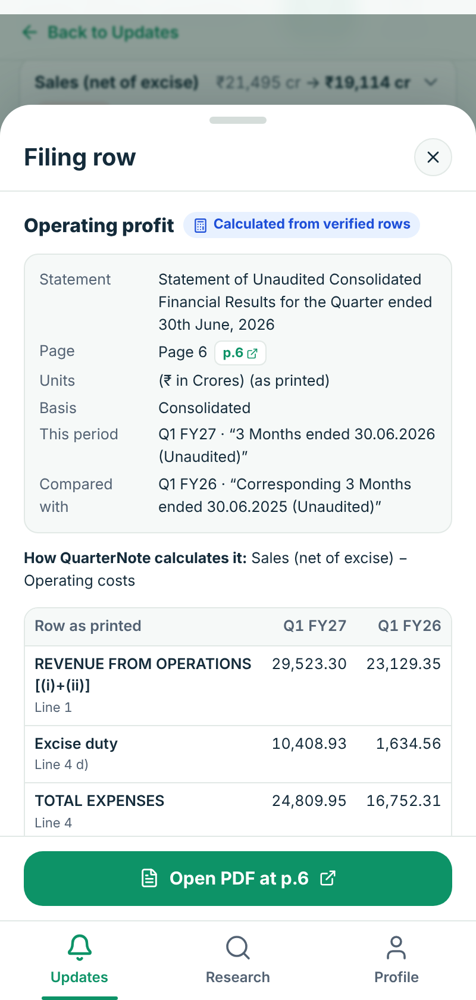
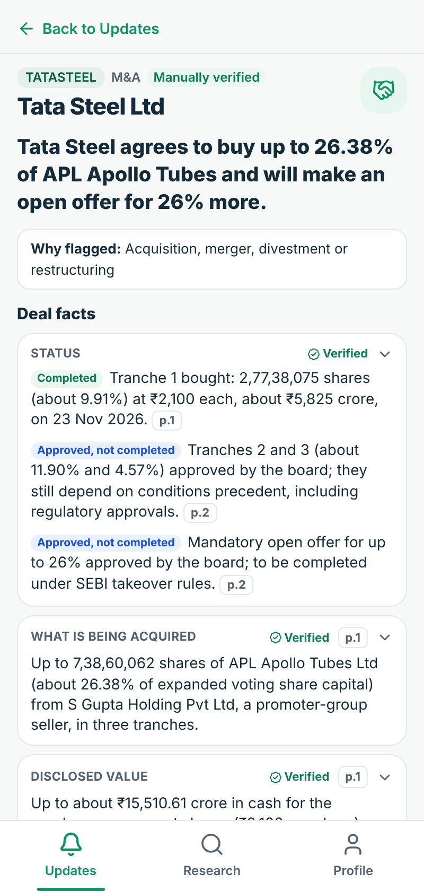

QuarterNote explains a company announcement in the format that event needs, and puts every figure one tap from its filing row. The next step is to test whether that gets investors to a correct answer faster.
Labels: SOURCED cited fact · ASSUMPTION planning estimate · TEST to be measured
The work behind one update is real, and it changes by event.
User: a self-directed Indian equity investor with a 5–15 stock watchlist. They check a broker app most days and read results, but not full filings. When an alert arrives they open the exchange PDF, a screener table and the news, then decide whether to dig deeper.
Not yet proven: how often investors struggle with this, and how much time QuarterNote saves. Both are hypotheses for the first test. TEST
One journey; the layout changes with the investor’s question.
Open update → understand what changed → verify the filing → ask a follow-up if needed.
| Event | Investor’s question | What the prototype shows |
|---|---|---|
| ITC results | Which figures changed, and can they be compared? | Year-on-year changes, the filing’s comparability notes, and a filing-row view: each row as printed, its page (p.6), and how operating profit is calculated |
| Tata Steel deal | What has happened, and what is still pending? | Deal facts with a status per step (completed, or approved but not completed), the conditions, and the page each fact comes from |
Evidence sits one tap behind every figure. That interaction came from the clickable KPI tree I built during my internship, where tapping a number showed what it was built from. Figures are labelled verified, calculated from verified rows, or not verified. Follow-ups go to Research, which answers from company documents with page citations.
Trading and recommendations are left out on purpose. Recommendations could bring QuarterNote under SEBI’s investment advice and research rules, and both would dilute the one job I want to test.

ITC: filing row, p.6
Tata Steel: done vs pendingA large audience; a small, assumed first-year market.
| Level | Size | How I got it |
|---|---|---|
| TAM SOURCED | 13.24 cr | Unique NSE-registered investors, 30 Jun 2026 (Business Today). A broad audience proxy, not a market: many never pick stocks |
| SAM ASSUMPTION | 66.2 lakh | 13.24 cr × 5% who actively track individual stocks |
| SOM yr 1 ASSUMPTION | 4,000 / 200 | 4 results seasons × 4,000 visits × 25% activation = 4,000 activated; 5% pay = 200 |
Base still growing: ~2.1 cr new investors in FY26 (Apr 2025–Mar 2026), ANI / Tribune India. SOURCED
Same task today: “what changed in ITC’s results, and can it be compared?”
| Tool | How the investor does it | What is still left to them |
|---|---|---|
| Screener.in | Compares standardised quarterly figures | Finding the comparability notes in the filing |
| NSE filings | Opens the original PDF | Locating the right rows and notes across pages |
| Quartr | Reads or hears the earnings call | Linking management’s words to filed figures |
Gaps are my judgment from using each tool. Advantage to prove: investors reach a correct, source-backed answer faster than with their usual tools. TEST
Launch in a results season, so a first visit lands on a real update.
Post real ITC-style analyses in investor communities, sponsor five finance newsletters, and add a share link to every update. Activated = reviewed one material update for a company they follow. ASSUMPTION
The biggest drop is activation (25%), so the first design work goes into making the first update easy to open and verify. Cash budget ₹25,000 → ₹25 per activated user, ₹500 per paying user.
The core job stays free; depth is what someone might pay for.
Free: updates for followed companies, the event explanation and its filing evidence.
Pro, ₹199/month (proposed): larger watchlist, more Research questions, guidance-vs-actuals tracking. ASSUMPTION
How the numbers fit (guesstimate): ₹199 price − ₹50 AI and data cost = ₹149 a month contribution. CAC per paying user = ₹25 ÷ paid conversion (5% → ₹500). Payback = ₹500 ÷ ₹149 ≈ 3.4 months; it stays under six months unless conversion falls below ~3%. ASSUMPTION
How I would test them: offer Pro at ₹149, ₹199 and ₹299 to users who return for a second reporting cycle and count paid sign-ups; log AI and data cost per active user for a month; measure conversion only after that second cycle. TEST
The prototype already shows how it handles weak evidence; legal and data checks must happen before launch.
| Area | Already demonstrated in the prototype | Launch requirement |
|---|---|---|
| SEBI rules | Facts and calculations only; no buy/sell calls | Qualified review of SEBI research and advice rules first |
| Exchange data | Each update links to the original NSE filing | Check exchange terms; licence before commercial use |
| Privacy, uploads | No sign-up; device-only preferences; PDF uploads | DPDP Act 2023 review; uploads private and deletable |
| Missing evidence | Unchecked figures are labelled “not verified” | Keep the label; never fill a gap with an estimate |
| Period mismatch | Shows “cannot compare” when periods differ | Extend the check to every event type |
| AI errors | Research cites pages; facts kept apart from interpretation | Monthly audit of figure, period, units and basis |
North star: weekly users who review a material update for a company they follow. It counts understanding of a real event, not app opens.
| Metric | Target | How measured |
|---|---|---|
| Time to a correct, source-backed answer TEST | Faster than usual tools; <2 min | 8 investors, comparable tasks in QuarterNote and their usual tools, order alternated |
| Return at next reporting cycle ASSUMPTION | 30% of activated | Users back when the next results land |
| Source opens TEST | Tracked, no target | An open is not proof of understanding |
| Audited accuracy ASSUMPTION | 98% of figures | Monthly audit against the cited row |